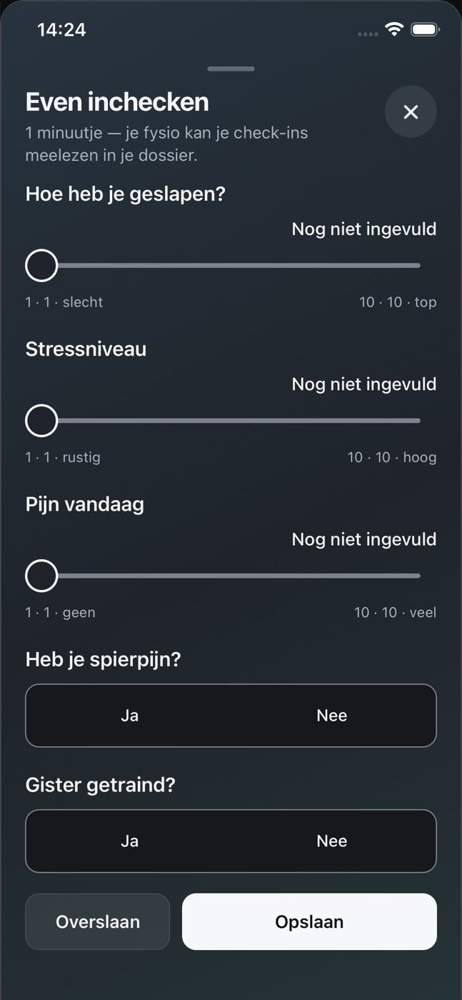

EEN EIGEN GEZICHT VOOR PERFORMANCE PLUS
Drie richtingen.
Alle ruimte om te kiezen.
Dezelfde app. Drie verschillende manieren om het verhaal te vertellen.
Klik door, bekijk de schermen en probeer de website op je telefoon.
Performance Plus
Je programma.
Ook buiten de praktijk.
Bekijk de app ↗

01 / IN BEWEGING
Licht. Direct. In beweging.
Veel fotografie, frisse ruimte en de app dichtbij.
- Opbouw
- Grote gecentreerde kop, breed beeld met overlappende telefoon
- Kleur
- Licht grijsgroen, inkt en een fris groen accent
- Letter
- Strakke, zware schreefloze koppen
Performance Plus
OP JOUW TEMPOVan de eerste
Ontdek de app ↗
Van de eerste
oefening tot
weer meedoen.
Ontdek de app ↗

02 / OP JOUW TEMPO
Warm. Persoonlijk. Rustig.
Zacht saliegroen, natuurlijke beelden en meer verhaal.
- Opbouw
- Editoriale split met boogvormig beeld en telefoon
- Kleur
- Crème, salie en donker olijf
- Letter
- Schreefletter met cursieve accenten

Performance Plus
Van de
behandelkamer
naar het
sportveld.
Bekijk de app ↗03 / TERUG NAAR HET VELD
Sportief. Focus. Karakter.
Donker grafiet, ingetogen blauw en groot beeld.
- Opbouw
- Sportfoto over de volle breedte, genummerde rijen
- Kleur
- Grafiet, lei en gedempt blauw
- Letter
- Compacte, krachtige schreefloze koppen
Alle drie de concepten hebben een app-rondleiding, interactieve onderdelen en een contactvenster. De app-schermen en het P+ beeldmerk zijn van Performance Plus.
Dit is een ontwerppreview. Fotografie dient als sfeerbeeld; contact maakt een e-mailconcept dat je zelf kunt versturen.